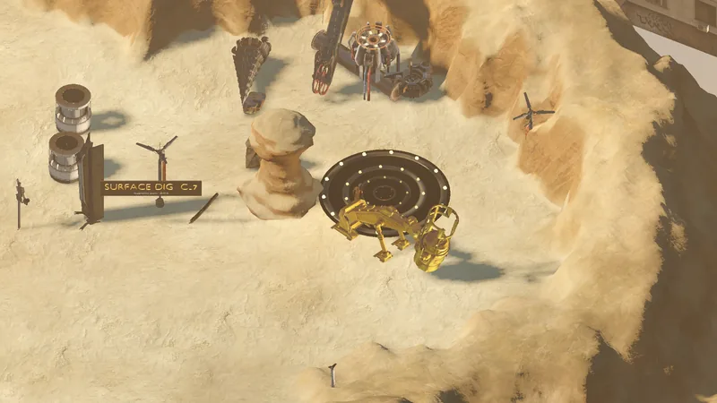

Ruta · Superficie · Frontier Road · oeste
The Saltpan
Panorama
Frontier Road, mitad oeste. Un salar donde murió un convoy en la vieja ruta; chatarra, las ruinas de una salinera y los primeros saqueadores.


Tu primer viaje · paso 4/6Frontier Road empieza en el convoy destruido: rescatá lo que sirva, perforá la veta de magnetita y despejá a los saqueadores de la salinera.
Salidas y conexiones
| Hacia | Tipo | Cartel de salida | Borde | Moto | Estado |
|---|---|---|---|---|---|
| The Scarp | Camino · túnel | WEST CANYON · THE SCARP | W | Se cruza montado | Jugable hoy |
| The Scarp | Camino · puerta | SOUTH CANYON · THE SCARP | S | Se cruza montado | Jugable hoy |
| Frontier Road | Camino · puerta | EAST · FRONTIER ROAD | E | Se cruza montado | Jugable hoy |
| The Salt Pit | Camino · puerta | SOUTH · THE SALT PIT | SW | Se cruza montado | Jugable hoy |
Criaturas
12 criaturas a la vez cuando está todo lleno.
| Criatura | Cantidad | Reaparición | XP | PV |
|---|---|---|---|---|
| Tribal Bug | 1 | 180–260 s | 200 | 260 |
| Acid Spitter | 2 | 60–110 s | 110 | 95 |
| Brood | 3 | 60–110 s | 40 | 45 |
| Zombine Miner | 2 | 90–150 s | 95 | 120 |
| Ripper | 1 | 90–150 s | 120 | 150 |
| 3 | Ubicación fija | 35 | 30 |
Puntos de perforación
Mantené F en un punto con un taladro en la ranura de herramienta: Big Daddy Drill.
| Material | Puntos | Rinde |
|---|---|---|
| Magnetite Lode | 1 | Lodestone Magnetite ×2 |
Hallazgos sueltos
Carteles que vas a leer
THE SALTPANthe convoy never reached the shaftSALT WORKSSURFACE DIG C-7magnetite seam · drill itEAST · FRONTIER ROADto DustlineTO THE SCARPTO THE SCARPTO FRONTIER ROAD
Lo mencionan
Old Tallow · Lister · Nell · Mama Zuri
Ver también
The Scarp · Frontier Road · The Salt Pit · Zonas · Mapa del mundo